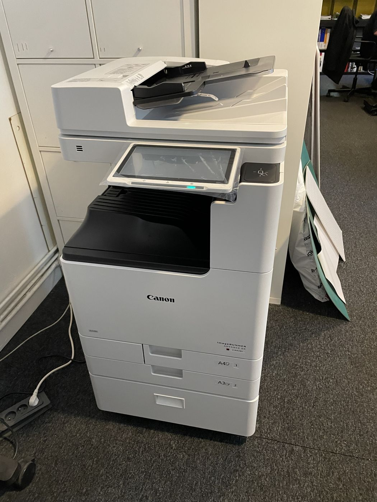
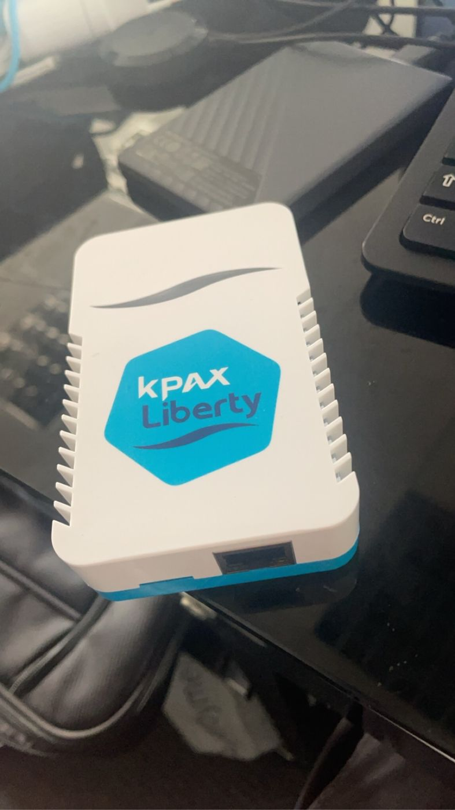
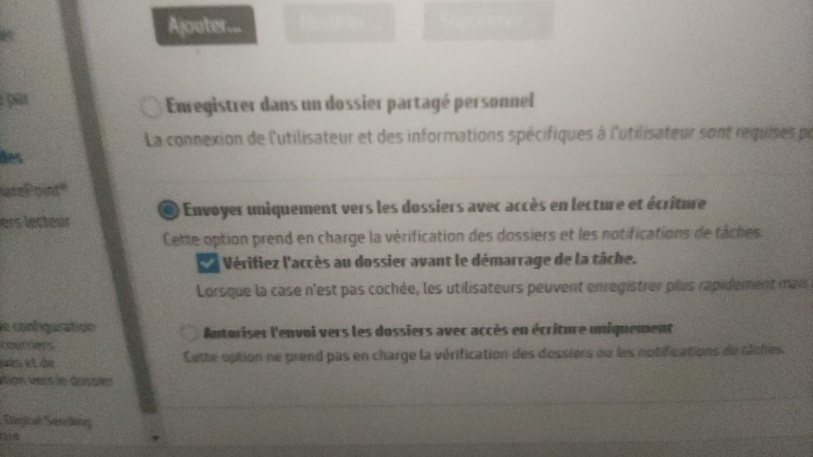

Entreprise · Naxteam Partner
Gestion et support d'un parc d'impression
Installer, superviser et dépanner des copieurs multifonctions chez des clients professionnels, à distance et sur site.
- Canon
- HP
- KPAX (MPS)
- Scan-to-Email / Folder
- TeamViewer / AnyDesk
Contexte
Lors de ma première alternance, j'ai assuré le support de niveaux 1 à 3 d'un parc de multifonctions (Canon, HP) déployé chez plusieurs entreprises : installation sur le réseau, dépannage à distance, supervision et interventions matérielles.
Résultat
Copieurs intégrés aux réseaux clients, pannes traitées à distance quand c'est possible, supervision proactive (compteurs, toners, maintenance) grâce à un boîtier KPAX Liberty.
Étapes de réalisation
- Installation et intégration réseau. Mise en place du copieur, adresse IP statique selon le plan du client, pilotes sur le serveur d'impression Windows.
- Services. Scan-to-Email via le relais SMTP de l'entreprise, Scan-to-Folder vers les partages SMB du serveur de fichiers.
- Diagnostic à distance. Niveau 1 : compteurs et codes d'erreur dans KPAX, prise en main d'un poste du client (TeamViewer, AnyDesk). Niveau 2 : interface web ou Remote Operation Viewer, étalonnage du scanner, vérification et mise à jour du firmware.
- Maintenance matérielle. Intervention sur site si la panne persiste : tambours, patins du chargeur, nettoyage des capteurs et de la vitre.
- Supervision proactive. Boîtier KPAX Liberty branché sur le LAN du client : niveaux d'encre, compteurs et alertes remontent automatiquement.
Captures



Difficultés rencontrées
- Distinguer ce qui se règle à distance (réseau, firmware, étalonnage) de ce qui impose un déplacement (pièces d'usure).
- Diagnostiquer un Scan-to-Folder : droits SMB, chemin UNC et paramètres d'authentification.
Technologies utilisées
- Configuration IP statique
- Diagnostic SMB et SMTP
- Maintenance matérielle
- Outils de prise en main à distance
- Supervision MPS (KPAX)